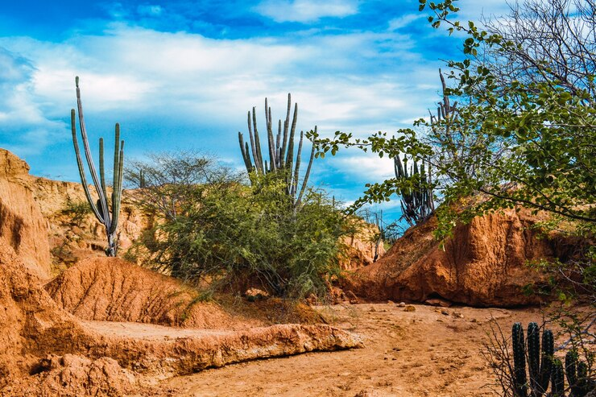
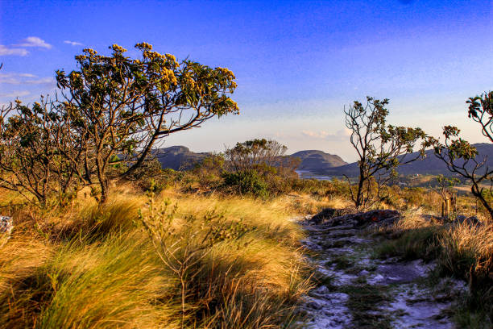
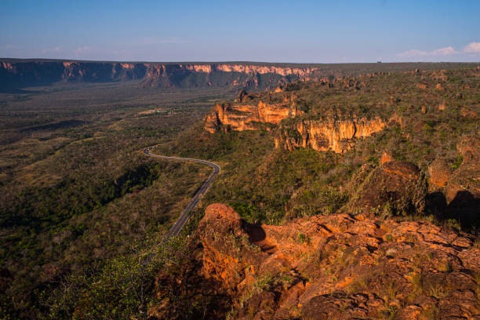
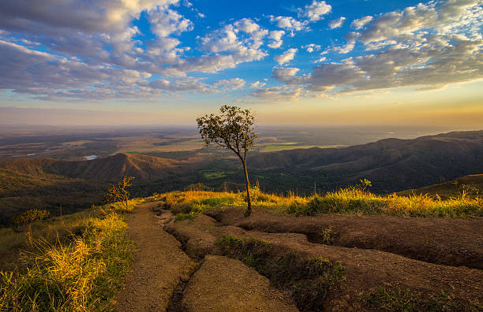

O Cerrado, conhecido como a savana brasileira, é o segundo maior bioma da América do Sul e abriga uma rica biodiversidade. Suas plantas são adaptadas a condições climáticas extremas, com longos períodos de seca. Conheça as maravilhas desse bioma único e sua flora resistente e diversificada.
O Cerrado é caracterizado por suas árvores de troncos retorcidos e casca grossa, como o Ipê Amarelo (Handroanthus serratifolius) e o Pau-terra (Qualea parviflora). Essas árvores possuem adaptações para resistir ao fogo e à seca prolongada, elementos comuns no bioma.
Muitas espécies de plantas do Cerrado são usadas tradicionalmente para fins medicinais. Entre as mais conhecidas estão o Barbatimão (Stryphnodendron adstringens), usado para curar feridas, e a Aroeira (Schinus terebinthifolius), que possui propriedades anti-inflamatórias.
O Cerrado é um dos biomas com maior diversidade de flores, especialmente durante a estação das chuvas. Orquídeas, bromélias e espécies como a Paepalanthus (sempre-viva) e o pequi (Caryocar brasiliense) colorem a paisagem, encantando tanto pela beleza quanto pela utilidade para a fauna local.
A vegetação do Cerrado desenvolveu adaptações extraordinárias para sobreviver em um ambiente onde o fogo é comum. Algumas plantas possuem casca espessa para resistir às chamas, enquanto outras têm raízes profundas que alcançam lençóis freáticos, garantindo a sobrevivência durante a seca.
